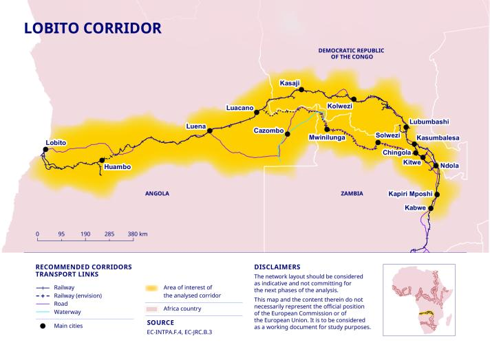
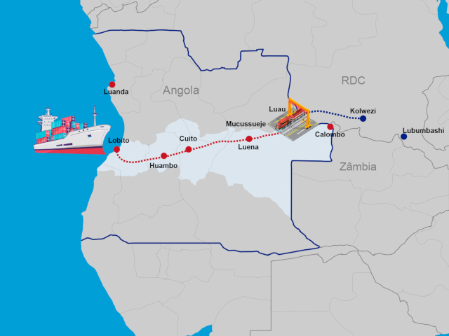

início


Histórico
- A base do Corredor do Lobito é o Caminho-de-Ferro de Benguela (CFB), inaugurado em 1906 por uma concessão assinada por Robert Williams. O projeto originalmente conectava o centro da África (Katanga, RDC, e Copperbelt, Zâmbia) ao Porto do Lobito, estendendo-se até Moçambique e oferecendo acesso ao Índico.
- Após a guerra civil angolana, apenas 34 km da ferrovia permaneciam operacionais. Em 2005, o país aceitou um empréstimo chinês de US$1,5 bilhões para reabilitar a ferrovia e o porto.
Dados técnicos e cronologia recente
- O CFB tem cerca de 1 344 km em Angola (totalizando 1 866 km com extensões internacionais) e conecta-se aos sistemas de transporte da Zâmbia e da RDC.
- Em novembro de 2022, o governo angolano concedeu a operação do corredor ao consórcio Lobito Atlantic Railway (LAR) — formado por Trafigura, Mota-Engil e Vecturis — por 30 anos, com um prêmio de assinatura de US$100 milhões.
- Os investimentos incluem cerca de US$500 milhões em Angola (com possível complementação por financiamento sul-africano, conforme plano de expansão total de US$455 milhões + US$100 milhões para modernização na RDC).
- A LAR já encomendou 275 vagões porta-contentores (capazes de transportar contêineres de 10, 20 e 40 pés), fabricados em aço de alta resistência, com entregas iniciadas desde o último trimestre de 2024.
- Para fins de 2023–2025, foi criada a Agência de Facilitação do Transporte de Trânsito do Corredor do Lobito (LCTTFA), com os governos de Angola, RDC e Zâmbia e apoio da SADC, para harmonizar políticas, leis e infraestrutura.
Objetivos
- Exportação rápida de minerais estratégicos (como cobre e cobalto) através de um porto atlântico, reduzindo custos e tempos logísticos e oferecendo alternativa ao congestionamento dos portos da África Oriental.
- Diversificação econômica interna em Angola, impulsionando cadeias de valor na agricultura, agroindústria, logística e indústria transformadora nas províncias de Benguela, Huambo, Bié e Moxico.
- Aumentar o volume de carga movimentada, de 500 mil toneladas/ano atualmente para 3 milhões de toneladas/ano até 2035.
- Atração de investimentos multilaterais, com apoio de Estados Unidos (via PGII e outros fundos), União Europeia (Global Gateway), e Africa Finance Corporation (com novo aporte de US$320 milhões com a Itália).
- Criação de emprego e inclusão socioeconômica, especialmente para PMEs e mulheres empreendedoras, via apoio à facilitação do comércio e governança do corredor.
- Equilíbrio geopolítico na região, oferecendo uma alternativa de infraestrutura moderna e aberta a modelos de desenvolvimento mais transparentes, em contraponto à dinâmica de financiamento da China.
Resumo: O Corredor do Lobito evoluiu de uma ferrovia colonial para um eixo estratégico moderno de integração regional e desenvolvimento econômico. Com investimentos significativos, concessão de longo prazo e políticas de governança regional, é visto como motor de diversificação econômica, inclusão regional e competitividade internacional.
Fontes:
/corredor-do-lobito
/expansão
/sadc
/financial-times